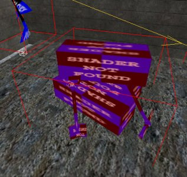
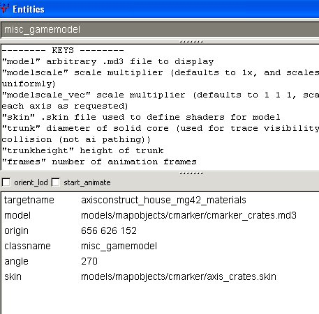
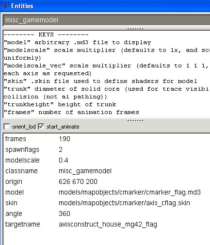
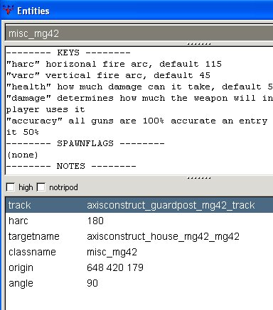
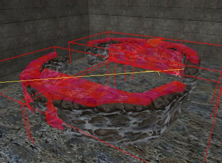
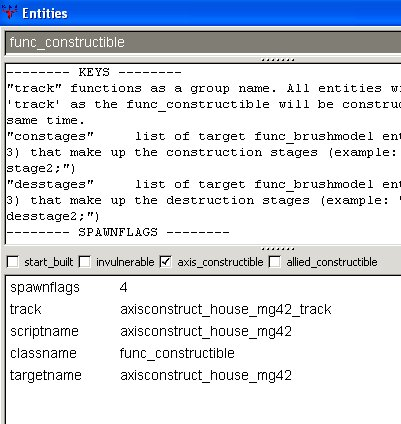
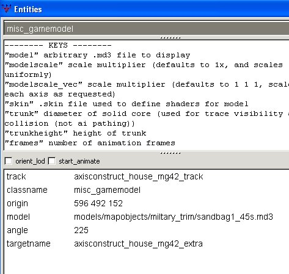

|
Now shift+alt+click the crates model and press
N.


This is the model of the crate boxes.
A skin ie a texture, is applied to
the crates model to make them axis crates.
 Models are not rotated in the map in
the same way as brushes. That is,
if you try to rotate a model it won't do
anything. To adjust the angle of a
model, you use the "angle" key
and a value in degrees. If angle
is not specified, 0 (East) is
assumed. These boxes have been
rotated 270 degrees. Models are not rotated in the map in
the same way as brushes. That is,
if you try to rotate a model it won't do
anything. To adjust the angle of a
model, you use the "angle" key
and a value in degrees. If angle
is not specified, 0 (East) is
assumed. These boxes have been
rotated 270 degrees.
|
The classname is misc_gamemodel
rather than misc_model.
Use misc_model for any sundry model,
no matter how big or small, that will
just sit there and do nothing, like
trees.
Use misc_gamemodel if the model needs to
be referred to in the script.
There is an exception to this which will
be covered later.
|
Close the window and press H.
Shift+alt+click the flag. Press N.

This model is animated: the flag flaps in
the breeze. Hence the
start_animate and
frames settings.
The 360 degree angle seems pointless, but
hey, that's how it is in Goldrush so I've
left it alone.
Close the window and press H.
Ok, that's dealt with the crates side of the
MG42. Now select the red box which is
the MG42, and press N.

I have given the MG42 a horizontal arc of
180 degrees, which allows it to spin
completely round. Normally the default
arc is ok so harc is not specified
I wanted the built MG42 to face north, so I
gave it an angle of 90 degrees.
Close the window and press H.
Shift+alt+click the clip brush that
envelopes the sandbag models.

Press N.

The clip brush is a
func_constructible, ie the subject of
a toi trigger.
The MG42 + sandbags are to be built by axis,
so the axis_constructible box is
ticked.
The track in this instance is used by
ET to tell it to consider anything else with
the same track value to be part of the
constructible. So when the clip gets
built, the models with the same track value
undergo the construction with it.
Close the window and press H. You are
left with just 4 models. Shift+click
any of them.

You know enough now from previous
explanations to be able to interpret the
settings shown.
Press shift+H to reveal everything
again. Save your work and compile
it. Don't test it yet.
|